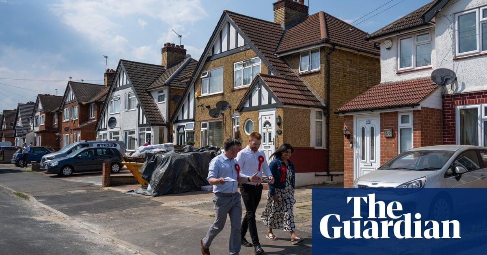

Boris Johnson, Nadine Dorries and Nigel Adams: who might win their seats?After a series of dramatic resignations by Conservative MPs – first the former culture secretary Nadine Dorries, then the former prime minister Boris Johnson and finally the Johnson loyalist Nigel Adams – Rishi Sunak faces three imminent byelections in England. At a time when the prime minister is trying to prove that he has steadied the ship, Conservative HQ is likely to see them as sapping time and attention. For Labour and the Liberal Democrats, they are a chance to get on the front foot before the next general election. So, where are the byelections happening, and what are the opposition parties’ chances? Uxbridge and South Ruislip Outgoing MP: Boris Johnson Majority: 7,210 Target: Labour The Tories have held Uxbridge and South Ruislip, a suburban seat on the outer reaches of west London, since its creation in 2010. Johnson won there with a majority of 10,695 in 2015, 5,034 in 2017 and 7,210 in 2019. Polling by the former Tory deputy chairman Lord Ashcroft suggested early last week that Johnson would win a byelection with 50% of the vote, with Labour’s Danny Beales on 33% and the Liberal Democrat Blaise Baquiche on 6%, a point ahead of the Greens. With Johnson’s decision to stand down on Friday, however, Labour has the seat firmly in its sights and it is seen as a key target. Even before Johnson quit it was among Labour’s top 100 targets. The Ashcroft poll has also been questioned; modelling from Britain Predicts puts Labour on course to win the seat by 11 points. Beales is currently a council cabinet member in Camden, but he was born in Hillingdon hospital and grew up in South Ruislip and Ruislip Manor. Labour hope the 34-year-old charity worker will appeal to the constituency’s voters. Baquiche, a former civil servant and media consultant on the climate and the environment, will contest the seat for the Lib Dems. The party’s leader, Ed Davey has ruled out a formal pact with Labour to encourage tactical voting in order to beat the Conservatives in the byelections. The seat has a diverse and increasingly South Asian population. The white British share of its population has fallen from 70% to 57% between 2011 and 2021. The Conservatives retained control of Hillingdon, which forms part of the constituency, in the May 2022 local elections. But according to analysis in the New Statesman by the co-founder of the polling group Britain Elects, the seat is winnable for Labour - and is seen as a bellwether for the next general election. The polling expert Luke Tryl from More in Common has also said Labour should be able to win in Uxbridge, unless there is something “seriously off” with the polling. Mid Bedfordshire Outgoing MP: Nadine Dorries Majority: 24,664 Target: Liberal Democrats, Labour At first glance, Mid Bedfordshire seems as close to a typical Tory rural heartland as you could imagine. It has long been considered an ultra-safe seat and has been in Conservative hands since 1931. It voted strongly to leave the EU in 2016, and the Tories have a sizeable majority of 24,664. After Dorries resigned on Friday, however, having reportedly been dropped from Boris Johnson’s resignation honours list, Labour and the Lib Dems have stepped up their manoeuvres in the constituency, where a byelection is likely to be fought in the autumn. The former culture secretary won 60% of the vote at the 2019 general election, with Labour on 22% and the Lib Dems on 13%. The seat consists of small towns and rural areas, and is wealthier than the UK average. Despite the 2019 result, the Lib Dems insist that, given that it is a solid Tory seat in the south of England, they are the main challengers, pointing to successes in previous contests in Tory-dominated rural areas. The Lib Dems would need a 23.6% swing to win the seat, smaller than the 25.2% they achieved in Chesham and Amersham in June 2021 and the 34.2% that won them North Shropshire last December. Sources in the party have been quoted as saying that Labour has a “natural ceiling” in rural Tory heartlands, and they point to the fact that the seat stayed blue in the Labour landslide of 1997. But Labour’s campaign chief, Shabana Mahmood, has said: “Labour will be campaigning to win in this byelection by listening to the voters the Tories are ignoring.” According to UK Polling Report, the seat could well stay in Tory hands. The pollster Callum Jones said that while a Conservative loss in Mid Bedfordshire is “more than possible”, it “may well depend on how well opposition parties can cooperate”. Selby and Ainsty Outgoing MP: Nigel Adams Majority: 20,137 Target: Labour/Liberal Democrats With a Conservative majority of 20,137 in 2019, Selby and Ainsty in North Yorkshire is hardly marginal. It has been in Tory hands since its creation in 2010, and Nigel Adams has successfully defended the seat three times. But the Johnson loyalist, who quit with immediate effect on Saturday after also reportedly being promised a peerage that did not materialise, has left the party wide open to a Labour attack. The Tories took 60% of the vote in 2019, Labour 25% and the Lib Dems 8.6%. Britain Elects polling suggests a narrow Tory win, with the Conservatives on 40.5% and Labour on 38.5%. The seat has not always been true blue. Before 2010, the Selby seat went the way of the governing party at every election from its creation in 1983, and was a Labour marginal with decreasing majorities during the Blair and Brown years until it switched in 2010. A mainly rural constituency, which includes the towns of Selby and Tadcaster, its inhabitants have an income close to the national average and with lower than average reliance on social housing. Tryl said that while the seat was “solid” for the Tories, the mood of its voters could show if “Labour is on course to win [in similar fashion to] 1997 or somewhere short of that mark”. |
 |